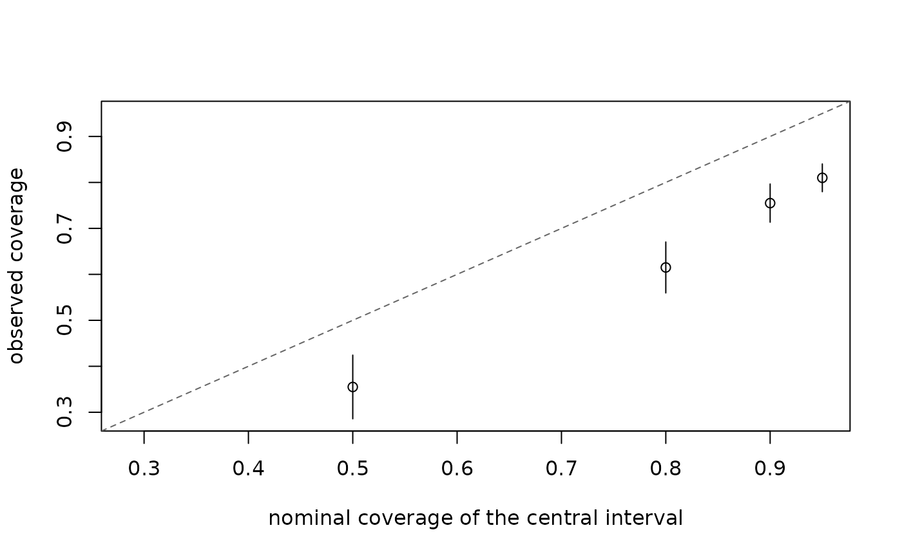

Plot the calibration of predictive distributions
Source:R/ilm_plot_diagnostics.R, R/zzz-iml-aliases.R
ilm_plot_calibration.RdFor a continuous or count outcome, plots the observed coverage of the central intervals against their nominal levels. A well-calibrated model's points sit on the diagonal; points below it are intervals too narrow. For a binary outcome it draws the reliability diagram instead: the observed rate against the mean predicted probability, bin by bin, with Wilson intervals. The calibration intercept and slope are given under the title.
Value
The data behind the plot, invisibly: for coverage, the calibration's coverage table (each level's coverage, standard error and mean width) with the plotted interval limits; for a binary outcome, its reliability table (each bin's mean prediction, observed rate and Wilson interval).
Reading the plot
Coverage plot (a continuous or count outcome): each point is one interval level, with the share of outcomes inside it and a confidence interval for that share. Points on the dashed diagonal mean the intervals cover what they claim. Below it, they cover too little: the predictions are too certain. Above it, they cover too much: too uncertain.
Reliability diagram (a binary outcome): each point is a bin of rows with similar predicted probabilities, placed at their mean prediction and their observed rate. On the diagonal, the probabilities are right. A pattern flatter than the diagonal means probabilities too extreme, and a steeper one probabilities too moderate.
The verdict that goes with the plot, with what to do about it, is printed by ilm_calibration().
See also
ilm_calibration(), whose result it
draws; ilm_plot_pit() for the PIT histogram of the same outcomes.
Examples
set.seed(1)
d <- data.frame(x = rnorm(400))
d$y <- rnbinom(400, size = 1.5, mu = exp(1 + 0.5 * d$x))
train <- d[1:200, ]; test <- d[201:400, ]
fit <- illume::ilm_model(y ~ x, data = train, family = "poisson", verbose = FALSE)
cal <- illume::ilm_calibration(ilm_predict(fit, test, target = "response",
nsim = 200), test$y)
ilm_plot_calibration(cal)
